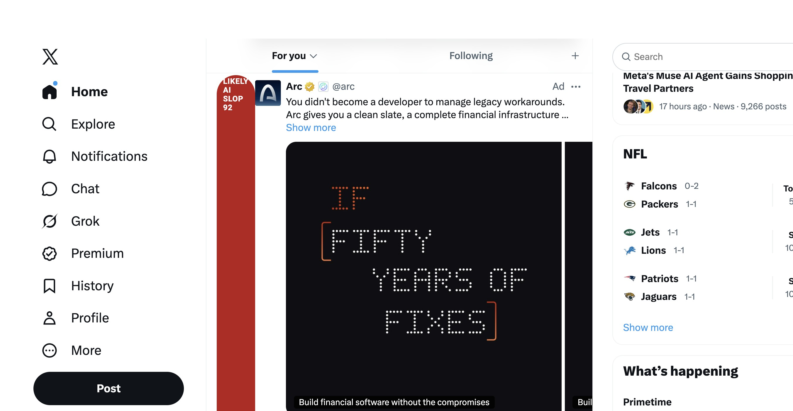
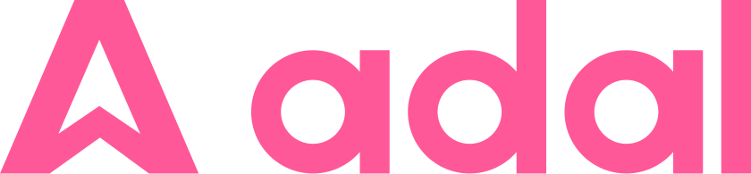

Every post is judged in real time by a confidence model and marked in place. You keep scrolling, you keep seeing everything, and the likely slop now announces itself.
score 93 → LIKELY AI SLOPscore 58 → CHECK THISscore 12 → untouched

LIKELY AI SLOP 92A model that answers one question per post: how likely is this low-effort AI generated slop, from 0 to 100. The number paints the card. You make the call.
High confidence. The badge sits on the card with the score that earned it.
Medium confidence. An outline on the card, and nothing more. It says look, not what to think.
The card is left exactly as it was. No marker, no change.
The extension is a plain unpacked folder. It talks to a small relay on your own machine, which is where the model key lives, so nothing sensitive ships inside the extension.
npm run relay in the repo, with TYPESAFE_API_KEY set in your environment.The relay listens on port 8787 and forwards one score question at a time.
extension/ folder as an unpacked extension.Chrome or Edge, developer mode on, then open x.com.
Cards are judged as they enter the viewport, one question each, marked in place.
